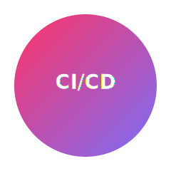

Skill
CI/CD Pipelines
Continuous Integration (CI) and Continuous Deployment (CD) automate the process of building, testing, and deploying applications to ensure faster and reliable software delivery.

Example Pipeline (GitHub Actions)
name: CI
on: [push]
jobs:
build:
runs-on: ubuntu-latest
steps:
- name: Checkout repository
uses: actions/checkout@v3
- name: Set up Node.js
uses: actions/setup-node@v4
with:
node-version: '18'
- name: Install dependencies
run: npm install
- name: Run tests
run: npm test
- name: Deploy to Production
if: github.ref == 'refs/heads/main'
run: npm run deploy
🔧 Common CI/CD Tools
- GitHub Actions – Integrates directly with GitHub for automated builds and deployments.
- Bitbucket Pipelines – Simple YAML-based CI/CD built into Bitbucket.
- GitLab CI/CD – Full-featured CI/CD with container support and environments.
- Jenkins – Open-source automation server for complex workflows.
- CircleCI – Cloud-based CI/CD service optimized for speed and scalability.
🚀 Key Benefits
- Faster and more reliable code deployments
- Automatic testing ensures fewer bugs
- Early detection of integration issues
- Reduces manual deployment effort
- Improves collaboration among developers and DevOps teams
🧠 Concept Overview
CI (Continuous Integration): Developers frequently merge code into a shared repository, where automated builds and tests verify the changes.
CD (Continuous Deployment/Delivery): Automatically releases tested builds to production or staging environments without manual intervention.